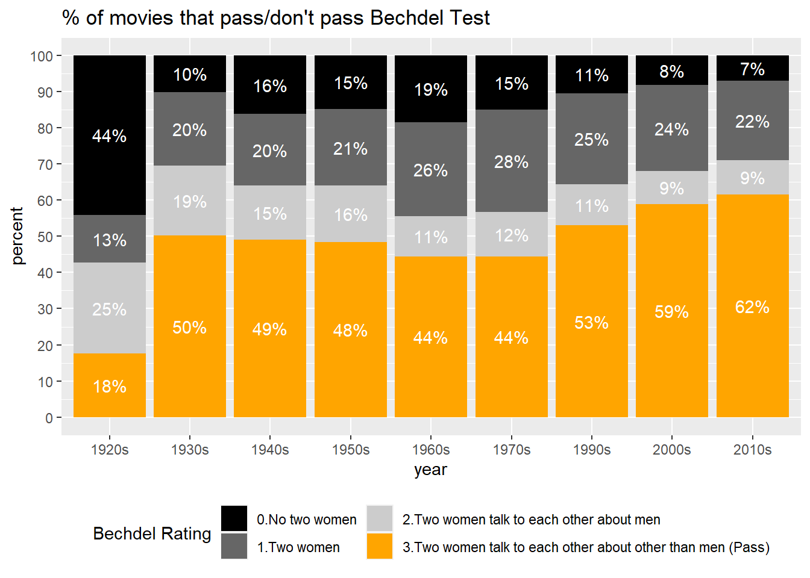
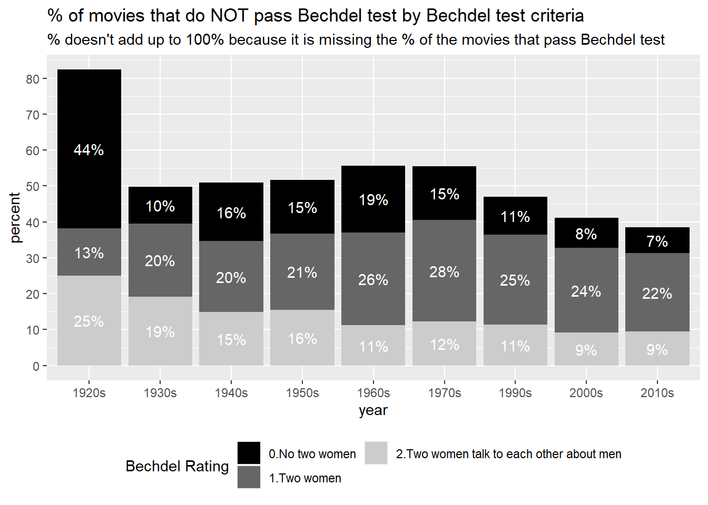

Even though half of the moviegoers in the United States are women, their story is not represented as much as that of men. Only 35% of the main characters in the best movies of 2021 were female, and male characters outnumbered female characters in 85% of the films. (Women and Hollywood, 2022) Also lacking are women behind the scenes in the film business. In 2021, just 12% of the top 100 films are directed by women. (Lauzen, n.d.)
In this project, I focused on analyzing female representation in movie stories rather than in their production. I used the data from three major movie databases, The Movie Database (TMDb), MovieLens, Open Movie Database (OMDb), and the Bechdel Test, one of the most common criteria to measure female presentation.
I would like to answer the following questions in this analysis:
Is female representation in movie stories improving over time?
What genres are doing better than others in terms of female representation?
Are movies with good female representation more popular?
Do movies with good female representation more money?
This analysis intends to document the data cleaning process, which is quite long. If you are curious only about the analysis results, please skip to Data Analysis and Visualization part.
#(1) movies_metadata.csv obtained from Kagglemovie =read_csv("_data/movies_metadata.csv")
Warning: One or more parsing issues, call `problems()` on your data frame for details,
e.g.:
dat <- vroom(...)
problems(dat)
Rows: 45466 Columns: 24
── Column specification ────────────────────────────────────────────────────────
Delimiter: ","
chr (14): belongs_to_collection, genres, homepage, imdb_id, original_langua...
dbl (7): budget, id, popularity, revenue, runtime, vote_average, vote_count
lgl (2): adult, video
date (1): release_date
ℹ Use `spec()` to retrieve the full column specification for this data.
ℹ Specify the column types or set `show_col_types = FALSE` to quiet this message.
Rows: 9802 Columns: 7
── Column specification ────────────────────────────────────────────────────────
Delimiter: ","
chr (3): imdbid, title, titleId
dbl (4): ...1, year, rating, id
ℹ Use `spec()` to retrieve the full column specification for this data.
ℹ Specify the column types or set `show_col_types = FALSE` to quiet this message.
(3) Open Movie Database (OMDb):
This dataset was generated by using Open Movie Database (OMDb) API https://www.omdbapi.com/. OMDb provides detailed information such as director, writer, nominated award, the number/score of reviews on IMDb, etc… if you provide the name or IMDb id of movies. I decided to use this database because it gives me data related to movies’ popularity and financial success of the films, which “The Movie Data set” doesn’t include.
OMDb doesn’t give you a list of all movies registered on it. Instead, you need to provide the exact movie title or the IMDb id to get the list of information. Thus, I will use this API once I have the data that join movies_metadata.csv and the Bechdel test. (Please refer to “Read in data / Describe data (OMDb)” for this process.)
Generated by summarytools 1.0.1 (R version 4.2.1) 2022-12-22
(2) Bechdel test
This data (bechdel) dataset documents the Bechdel test rating of 9630 movies released between 1874 and 2022. Each row represents a movie.
According to “Merriam-Webster”, the Bechdel test is “a set of criteria used as a test to evaluate a work of fiction (such as a film) based on its inclusion and representation of female characters” (https://www.merriam-webster.com/dictionary/Bechdel%20Test)
A movie passes the Bechdel test when it has at least two female featured characters that talk to each other about other than a man (men).
In bechdel, the Bechdel test rating is registered in the following manner.
0 ~ No two female characters
1 ~ Two female characters who don’t talk to each other
2 ~ Two female characters talk to each other about a man (men)
3 ~ Passes Bechdel test: Two female characters talk to each other about other than a man (men)
Apart from Bechdel ratings, this dataset (bechdel) contains the released year, title of movies, and id. id that starts with “tt” followed by 7 digits is the IMDb id and can work as a foreign key when joining this data with the movie dataset.
Generated by summarytools 1.0.1 (R version 4.2.1) 2022-12-22
Tidy data
(1) TMDb data
Checking missing values
First of all, I took a look at missing values (NA values) in the data.
Code
movie %>%select(everything()) %>%summarise_all(funs(sum(is.na(.)))) %>%t()
Warning: `funs()` was deprecated in dplyr 0.8.0.
ℹ Please use a list of either functions or lambdas:
# Simple named list: list(mean = mean, median = median)
# Auto named with `tibble::lst()`: tibble::lst(mean, median)
# Using lambdas list(~ mean(., trim = .2), ~ median(., na.rm = TRUE))
I deleted the following columns, which seem irrelevant for this analysis or have too many missing values.
- adult: This information doesn’t add any significant meaning as almost all of the observations have FALSE value for this column
- belong_to_collection: This column has 40000+ missing values
- homepage: Unnecessary for this analysis
- overview: Unnecessary for this analysis
- poster_path: Unnecessary for this analysis
- tagline: Unnecessary for this analysis
- video: This information doesn’t add any significant meaning as almost all of observations have FALSE value for this column
- popularity: This information may be interesting, however, it is not clear how this popularity is measured or where it was generated. Therefore, I decided to use popularity data from OMDb.
The values in some certain columns such as “genres”, “production_companies”, “production_countries”,“spoken_languages” are in a JSON list format for example:
# These columns include [] {} and ' in their values so I made a function remove_simbols that removes these unnecessary symbols.remove_symbols <-function(x) { removed_x <-str_remove_all(x, "\\{|\\}|\\[|\\}|\\]|'|,|id|name|:| ")return(removed_x)}
(1). Tidying Genres
Each movie contains information on one or more (up to 8) genres in a single column. To organize the information, the multiple genres contained in genre are split by “],” so that each genre is contained in eight new columns, genre1-genre8. Then, I removed unnecessary symbols such as ,.
Code
# Separating the `genre` by "},"movie <- movie %>%separate(genres, c("genre1", "genre2", "genre3", "genre4", "genre5", "genre6", "genre7", "genre8"), "\\},", remove =FALSE)
I managed to separate the genre information above. Now all values in genre 1 - 8 has a value in the format of “number + name of genre” (example: 35Comedy)
However, there are 2,445 observations whose genre value doesn’t fit the above format. Most of them don’t have any genre assigned so their genre1 values are empty or blank, which means they don’t have any genre assigned to them.
Code
movie %>%filter(!str_detect(genre1, "^[0-9]")) %>%select(starts_with("genre"))
However, looking at them closely, there are three observations whose genre value that is NOT blank but have strange strings.
The values in these observations such as “Carousel Production” and “Aniplex” don’t look like a name of genres but that of production studios. Also their original_title values don’t look like a title of movies but information of languages. It seems like these observations were not correctly read in because their values in other columns look weird.
Since these observations are not reliable, I decided to delete them from this dataset.
Code
movie %>%filter(!str_detect(genre1, "^[0-9]") &!str_detect(genre1, "^[ \t\n]*$")) %>%#^[ \t\n]*$ is a regular expression for blank.select(c(original_title, production_countries, genre1:genre3))
movie_clean1 <- movie %>%filter(!str_detect(genre1, "^[A-Z]"))
Genre information is more organized but is still not easy to be analyzed. Thus, I decided to make dummy variables of each genre.
For example, if movie A is categorized as “comedy” and “adventure”, the line of movie A should have 1 in the “comedy” column and the “adventure” respectively and 0 in columns of other genres.
Code
#https://community.rstudio.com/t/creating-dummy-columns-based-on-multiple-columns/58145/3movie_clean1 <- movie_clean1 %>%pivot_longer(cols =matches("genre[1-9]")) %>%add_column(count =1) %>%arrange(value) %>%filter(str_detect(value, "^[0-9]")) %>%mutate(value1 =str_replace_all(value, "[0-9]+", "")) %>%select(-c(value, name)) %>%arrange(title) %>%pivot_wider(names_from = value1, values_from = count, values_fill =list(count=0),values_fn =list(count = mean)) %>%arrange(title)# I also deleted genre "TVMovie" and "Foreign" because they're more format or origin country information rather than genre.movie_clean1 <- movie_clean1 %>%select(-c("TVMovie","Foreign"))
(2). Tyding Production_countries
The values in production_countries are written in the following way.
[{‘iso_3166_1’: ‘abbreviation of country’,‘name’: ‘full country name’}]
When there is more than one country in the value, I took the first country in account for this analysis.
Generated by summarytools 1.0.1 (R version 4.2.1) 2022-12-22
(2) Bechdel data
Removing and Mutating Columns
imdbid and titleId are duplicated because titleId is “tt+imdbid”. movie_clean1 data frame has IDs in the same format (starting with tt) as titleId of bechdel data frame so I deleted imdbid column.
Also, year and title information is available in movie data frame, thus I deleted them.
I made a new column bechdel_pass where 1 means the movie passes bechdel test and 0 means otherwise.
year bechdel_rating id titleid
Min. :1010 Min. :0.000 Min. : 1 Length:9802
1st Qu.:1988 1st Qu.:1.000 1st Qu.: 2558 Class :character
Median :2006 Median :3.000 Median : 5212 Mode :character
Mean :1996 Mean :2.133 Mean : 5225
3rd Qu.:2013 3rd Qu.:3.000 3rd Qu.: 7792
Max. :2022 Max. :3.000 Max. :10641
Code
# Changing the column ordercol_order <-c("id", "titleid","year", "bechdel_rating")bechdel <- bechdel[, col_order]# Mutate a new column bechdel_passbechdel <- bechdel %>%mutate(bechdel_pass =case_when( bechdel_rating ==3~1,TRUE~0 ))# Change data types of columnsbechdel$bechdel_rating <-factor(bechdel$bechdel_rating, levels =c("0", "1", "2", "3"))bechdel$bechdel_pass <-factor(bechdel$bechdel_pass, levels =c("0", "1"))
Sense Check
This data looks quite clean, however, I realized that the minimum number of year is 1010, which is weird. “Inazuma Eleven The Movie” was released in 2010, but it seems to have been mistakenly recorded as 1010. So I manually corrected the data.
Code
summary(bechdel)
id titleid year bechdel_rating bechdel_pass
Min. : 1 Length:9802 Min. :1010 0:1084 0:4208
1st Qu.: 2558 Class :character 1st Qu.:1988 1:2124 1:5594
Median : 5212 Mode :character Median :2006 2:1000
Mean : 5225 Mean :1996 3:5594
3rd Qu.: 7792 3rd Qu.:2013
Max. :10641 Max. :2022
Code
bechdel %>%filter(year <1800)
# A tibble: 1 × 5
id titleid year bechdel_rating bechdel_pass
<dbl> <chr> <dbl> <fct> <fct>
1 10556 tt1794796 1010 3 1
Code
bechdel$year[bechdel$year ==1010] <-2010
Join data sets
We have two data frames movie and bechdel , which have imdb id as a foreign key.
As we have a joined data, I read in the movie popularity data from OMDb using OMDb API.
omdb_df has 5 columns
imdbID: can be used as a foreign key when joining with other data frames
Director: Director’s name
Metascore: Review scores from 0 to 100 on the metacritic website (https://www.metacritic.com/movie). They are weighted averages. and reviews by certain reviewers are given more weight, however the detail is not revealed.
imdbRating: Review scores from 0 to 10 on IMDb website (https://www.imdb.com/). They are weighted averages.
New names:
Rows: 7729 Columns: 7
── Column specification
──────────────────────────────────────────────────────── Delimiter: "," chr
(4): imdbID, Director, Metascore, BoxOffice dbl (3): ...1, imdbRating,
imdbVotes
ℹ Use `spec()` to retrieve the full column specification for this data. ℹ
Specify the column types or set `show_col_types = FALSE` to quiet this message.
• `` -> `...1`
Now I have the data from OMDb as omdb_df. Let’s join movie_bechdel_join and omdb_df.
Code
data <-inner_join(movie_bechdel_join, omdb_df, by=c("imdb_id"="imdbID"),copy =TRUE)
Data Analysis and Visualization
Is female representation in movie stories improving over time?
To find out the answer for this questions, I looked at the result of the Bechdel test.
The number of movies that pass the Bechdel test increases over time, especially after around 1980 as the total number of released movies increased.
Code
movie_bechdel_join %>%filter(lubridate::year(release_date) >1920) %>%group_by(year = lubridate::year(release_date), bechdel_rating) %>% dplyr::summarize(n_total =n()) %>%ggplot(aes(x=year, y= n_total, fill = bechdel_rating)) +geom_area(stat ="identity") +scale_fill_manual(values =c("gray0", "gray40", "gray80", "orange"),labels=c("0.No two women", "1.Two women", "2.Two women talk to each other about men", "3.Two women talk to each other about other than men (Pass)")) +labs(x="year", y ="Number", title ="The number of movies by Bechdel test ratings", fill ="Bechdel rating")+scale_x_continuous(n.breaks=14) +theme(legend.position="bottom") +guides(fill =guide_legend(nrow =2))
`summarise()` has grouped output by 'year'. You can override using the
`.groups` argument.
However, the total number of released movies is increasing as well. Is the percentage of films that pass the Bechdel test increasing?
In the 1920s, which is 100 years ago, less than 20% of films passed the Bechdel test. There was a big increase in the percentage of Bechdel test-passing movies in the 1930s, however, the percentage of films passing the Bechdel test was stagnant at a bit lower than 50% from the 1930s to the 1950s. From 1950s to 1970s, the representation of women in the film somehow went backward, with less than 45% of films meeting the requirements of the Bechdel test; from the 1970s to the present, the percentage of films that pass the Bechdel test has continued to increase, reaching approximately 70% now. Although the representation of women seems to have improved since 1970, it has not improved dramatically compared to the 1930s and 1940s.
`summarise()` has grouped output by 'years'. You can override using the
`.groups` argument.
Code
data_with_p %>%ggplot(aes(x=years, y= percentage, fill = bechdel_rating)) +geom_col() +geom_text(aes(label=paste0(round(percentage), "%")), color="white", font="bold", position =position_stack(vjust =0.5)) +scale_fill_manual(values =c("gray0", "gray40", "gray80", "orange"),labels=c("0.No two women", "1.Two women", "2.Two women talk to each other about men", "3.Two women talk to each other about other than men (Pass)")) +labs(x="year", y="percent", title ="% of movies that pass/don't pass Bechdel Test", fill="Bechdel Rating") +scale_y_continuous(n.breaks=10) +theme(legend.position="bottom") +guides(fill =guide_legend(ncol =2))
Warning: Ignoring unknown parameters: font

Perhaps the percentage of films that pass the Bechdel test has not changed too dramatically compared to 70 years ago. However, if we focus on the movies that do NOT pass the Bechdel test, we can see a different trend happening.
In the 1920s, the majority of films did not feature two significant women; this trend changed greatly in the 1930s, with the percentage of films that did not feature two women decreasing significantly, peaking in the 1960s to about 20%, and then declining.
The percentage of films in which the only conversation between female characters is about men also decreased from 1930 to the 2010s.
Interestingly, however, the percentage of films in which female characters do not speak to each other (dark gray in the figure) has changed very little from the 1930s to the 2010s.
Code
data_with_p %>%filter(bechdel_rating!="3") %>%ggplot(aes(x=years, y= percentage, fill = bechdel_rating)) +geom_col()+geom_text(aes(label=paste0(round(percentage), "%")), color="white", font="bold", position =position_stack(vjust =0.5)) +scale_fill_manual(values =c("gray0", "gray40", "gray80", "orange"),labels=c("0.No two women", "1.Two women", "2.Two women talk to each other about men")) +labs(x="year", y="percent", title ="% of movies that do NOT pass Bechdel test by Bechdel test criteria", fill ="Bechdel Rating", subtitle ="% doesn't add up to 100% because it is missing the % of the movies that pass Bechdel test") +scale_y_continuous(n.breaks=10) +theme(legend.position="bottom") +guides(fill =guide_legend(nrow =2))
Warning: Ignoring unknown parameters: font

What category represents women better?
I focused on 4428 movies released between 2000 and 2020 because I want to do category-based analysis of a recent situation, and it’s better to focus on the period where more movies were released to observe the trend.
The degree to which women are portrayed in a film’s story varies widely from genre to genre.
The genre with the highest percentage of films passing the bechdel test is Romance (72%) and the lowest is Western (22%), showing a large difference.
Interestingly, not only the percentage of films that pass the Bechdel test, but also the percentage that meet each of the three criteria for passing the Bechdel test varies widely by genre.
For example, Western, War, and Documentary struggle more than other genres to feature two female characters. (To be precise, the Bechdel Test is for evaluating fictional stories, so it may not be appropriate to evaluate Documentary.)
`summarise()` has grouped output by 'genre_name'. You can override using the
`.groups` argument.
Code
viz_by_genre_with_p$genre_name <-factor(viz_by_genre_with_p$genre_name, levels = order_genre$genre_name[1:18])viz_by_genre_with_p %>%filter(years=="2000s"|years=="2010s") %>%group_by(genre_name, bechdel_rating) %>%summarize(n=sum(n)) %>%mutate(p=n/sum(n),percentage =100*p) %>%ggplot(aes(x=genre_name, y=percentage, fill= bechdel_rating)) +geom_col() +geom_text(aes(label=paste0(round(percentage), "%")), color="white", position=position_stack(vjust=0.5), size=3)+scale_fill_manual(values =c("gray0", "gray40", "gray80", "orange"),labels=c("0.No two women", "1.Two women", "2.Two women talk to each other about men", "3.Two women talk to each other about other than men (Pass)")) +labs(x="Genre", y="%", fill="Bechdel rating")+coord_flip() +theme(legend.position="bottom") +guides(fill =guide_legend(nrow =2))
`summarise()` has grouped output by 'genre_name'. You can override using the
`.groups` argument.
Above we looked at trends over the past 20 years, but what if we look at the historical trends over past 100 years?
Some genres continue to improve their representation of women compared to the past, while others remain the same.
For example, Horror, Adventure, Science Fiction, Animation, and Fantasy have gradually increased the percentage of films that pass the Bechdel test.
Western, History, War, and Crime, Comedy on the other hand, have not changed much in terms of female representation compared to 100 years ago.
Code
viz_by_genre_with_p %>%filter(years!="Before 1920") %>%ggplot(aes(x=years, y= percentage, fill = bechdel_rating)) +geom_col() +facet_wrap(~genre_name, ncol =5)+scale_fill_manual(values =c("gray0", "gray40", "gray80", "orange"),labels=c("No two female characters", "Two female characters", "That talk each other", "Other than a man (Passes Bechdel Test)")) +labs(x ="year", y ="percent", title ="Proportion of movies that pass / don't pass Bechdel test by categories")+theme(legend.position="bottom") +guides(fill =guide_legend(nrow =2)) +scale_x_discrete(breaks =c('1920s', '1960s', '2010s'),labels =c('1920', '1960', '2010'))
Do movies with good female representation succeed in gaining more popularity on online review site?
Again, I focused on the movies released after 2000 to see the recent trends.
I compared Metascore and IMDb ratings of the films that pass and don’t pass the Bechdel test.
The movies that don’t pass the Bechdel test seem to score higher on Metascore, however, the difference is quite small, and there seems to be no relationship between whether a film passes the Bechdel test and its reputation (Metascore).
Welch Two Sample t-test
data: ttest_pass$Metascore and ttest_not_pass$Metascore
t = 0.37842, df = 2936, p-value = 0.7051
alternative hypothesis: true difference in means is not equal to 0
95 percent confidence interval:
-0.9448254 1.3967391
sample estimates:
mean of x mean of y
57.81359 57.58764
Then, I compared the IMDb scores of the movies that pass and don’t pass Bechdel test. Those that don’t pass Bechdel test seem to score a bit higher.
Welch Two Sample t-test
data: ttest_pass$imdbRating and ttest_not_pass$imdbRating
t = -5.6621, df = 3804.6, p-value = 1.605e-08
alternative hypothesis: true difference in means is not equal to 0
95 percent confidence interval:
-0.2230059 -0.1082905
sample estimates:
mean of x mean of y
6.383584 6.549233
Do movies with good female representation succeed in making more money?
Even though the average box office amount of not-Bechdel-passing movies is higher than that of Bechdel-passing movies, T-test shows that the difference is not significant.
Welch Two Sample t-test
data: ttest_pass$BoxOffice and ttest_not_pass$BoxOffice
t = -1.5212, df = 3042.1, p-value = 0.1283
alternative hypothesis: true difference in means is not equal to 0
95 percent confidence interval:
-9207124 1162341
sample estimates:
mean of x mean of y
43773430 47795821
Conclusion
The representation of women in film stories stagnated from the 1930s to the 1970s, but has gradually improved, especially since the 1970s.
However, this is not true for all genres: the percentage of films that pass the Bechdel test varies widely from the 20% range (Western) to the 70% range (Romance), depending on the genre. Some genres (Horror, Adventure, Science Fiction, Fantasy) have consistently increased the percentage of films that pass the Bechdel test, while others (War, Crime, History, Western) have remained stagnant. The percentage of films that pass the test is increasing constantly.
It turns out that whether or not a film passes the Bechdel test has little impact on its success (i.e., popularity and revenue). However, the reviews on the imdb website are higher for films that do not pass the Bechdel Test.
This analysis has so far shown how women’s representation has (or has not) improved, and which genres have been particularly well represented by women, but it has not explained why this has happened. I would like to conduct an analysis that can answer the question “Why?”. For example, I would like to test the hypothesis that the increase in female representation in fantasy and horror is due to the increase in female audiences.
Also, I would like to further investigate the relationship between female representation and film success (popularity and revenue). In particular, I am interested in how the gender of the audience affects their evaluation of films in which women are represented and those in which they are not.
Reflection
One of the most difficult parts of this analysis was finding the right data. Even though there are many movie database, the information was not complete or not clear enough to be used. Thus, I ended up using two different movie databases and one Bechdel test database because one movie database (The Movie Dataset) didn’t have a clear definition of review ratings and popularity.
Another difficulty that I faced is that I could not find a good dataset of the gender of directors/writers of movies. Even though I found “credit” dataset that included the name and the gender of people who were involved in the movie production, the information on director was limited and only a few thousand movies had director information. Originally, I wanted to visualize the relationship between the gender of movie directors and the female representation, however, I gave up doing that for this project due to the lack of an appropriate dataset.
Lauzen, M. M. (2021). (rep.). It’s a Man’s (Celluloid) World, Even in a Pandemic Year: Portrayals of Female Characters in the Top U.S. Films of 2021. San Diego, California: San Diego State University and The Center for the Study of Women in Television and Film.
Source Code
---title: "Final Project Erika Nagai"author: "Erika Nagai"description: "Female representation in movie stories"date: "`r Sys.Date()`"format: html: toc: true code-fold: true code-copy: true code-tools: truecategories: - movie - gender - bechdel test - female representation - Erika Nagaieditor: markdown: wrap: 72---## IntroductionEven though half of the moviegoers in the United States are women, theirstory is not represented as much as that of men. Only 35% of the maincharacters in the best movies of 2021 were female, and male charactersoutnumbered female characters in 85% of the films. (Women and Hollywood,2022) Also lacking are women behind the scenes in the film business. In2021, just 12% of the top 100 films are directed by women. (Lauzen,n.d.)In this project, I focused on analyzing female representation in moviestories rather than in their production. I used the data from threemajor movie databases, The Movie Database (TMDb), MovieLens, Open MovieDatabase (OMDb), and the Bechdel Test, one of the most common criteriato measure female presentation.I would like to answer the following questions in this analysis:1. **Is female representation in movie stories improving over time?**2. **What genres are doing better than others in terms of female representation?**3. **Are movies with good female representation more popular?**4. **Do movies with good female representation more money?**This analysis intends to document the data cleaning process, which isquite long. If you are curious only about the analysis results, pleaseskip to [Data Analysis and Visualization] part.```{r}# install librarieslibrary(tidyverse)library(ggplot2)library(stringr)library(tidyr)library(dplyr)library(summarytools)library(lubridate)library(ggridges)```## Read in dataFor this analysis, I used the following different data sets.### (1) "The Movie Data set" from Kaggle :This dataset was obtained from Kaggle "The Movie Dataset"(<https://www.kaggle.com/datasets/rounakbanik/the-movies-dataset?resource=download&select=movies_metadata.csv>).```{r}#(1) movies_metadata.csv obtained from Kagglemovie =read_csv("_data/movies_metadata.csv")```### (2) Bechdel test API:I generated the data by using the bechdel test API<https://bechdeltest.com/api/v1/doc>.```{r}#(2) bechdel test obtained by using bechdel APIlibrary(rjson)library(jsonlite)#json_file <- "http://bechdeltest.com/api/v1/getAllMovies"#bechdel <- read_json(path = json_file, simplifyVector = TRUE)#bechdel$titleId <- paste("tt",bechdel$imdbid, sep = "")#write.csv(bechdel, file = "_data/bechdel.csv")bechdel <-read_csv("_data/bechdel.csv")```### (3) Open Movie Database (OMDb):This dataset was generated by using Open Movie Database (OMDb) API<https://www.omdbapi.com/>. OMDb provides detailed information such asdirector, writer, nominated award, the number/score of reviews on IMDb,etc... if you provide the name or IMDb id of movies. I decided to usethis database because it gives me data related to movies' popularity andfinancial success of the films, which "The Movie Data set" doesn'tinclude.OMDb doesn't give you a list of all movies registered on it. Instead,you need to provide the exact movie title or the IMDb id to get the listof information. Thus, I will use this API once I have the data that joinmovies_metadata.csv and the Bechdel test. (Please refer to "[Read indata / Describe data (OMDb)](#read-in-data-describe-data-omdb)" for thisprocess.)## Describe data### (1) "The Movie Data set"This data was originally created from The Movie Database(<https://www.themoviedb.org/>) and MovieLens(<https://movielens.org/>).This movie dataset was generated byMovielens, a (non-profit) movie review website(<https://movielens.org/>), and was obtained from the following Kagglelink.(<https://www.kaggle.com/datasets/rounakbanik/the-movies-dataset?resource=download&select=movies_metadata.csv>)The movie dataset contains 45,466 movies with release date betweenDecember 9th, 1874 and December 16th, 2020.The data includes the general information of movies, such as genres,revenue, run time, languages, status (released/in production etc...).```{r}print(summarytools::dfSummary(movie),varnumbers =FALSE,plain.ascii =FALSE,style ="grid",graph.magnif =0.80,valid.col =FALSE,method ='render',table.classes ='table-condensed')```### (2) Bechdel testThis data (`bechdel`) dataset documents the Bechdel test rating of 9630movies released between 1874 and 2022. Each row represents a movie.According to "Merriam-Webster", the Bechdel test is "*a set of criteriaused as a test to evaluate a work of fiction (such as a film) based onits inclusion and representation of female characters*"(<https://www.merriam-webster.com/dictionary/Bechdel%20Test>)A movie passes the Bechdel test when **it has at least two femalefeatured characters that talk to each other about other than a man(men)**.In `bechdel`, the Bechdel test rating is registered in the followingmanner.0 \~ No two female characters1 \~ Two female characters who don't talk to each other2 \~ Two female characters talk to each other about a man (men)3 \~ Passes Bechdel test: Two female characters talk to each other aboutother than a man (men)Apart from Bechdel ratings, this dataset (`bechdel`) contains thereleased year, title of movies, and id. id that starts with "tt"followed by 7 digits is the IMDb id and can work as a foreign key whenjoining this data with the `movie` dataset.```{r}print(summarytools::dfSummary(bechdel),varnumbers =FALSE,plain.ascii =FALSE,style ="grid",graph.magnif =0.80,valid.col =FALSE,method ='render',table.classes ='table-condensed')```## Tidy data### (1) TMDb data### **Checking missing values**First of all, I took a look at missing values (NA values) in the data.```{r}movie %>%select(everything()) %>%summarise_all(funs(sum(is.na(.)))) %>%t()```### **Deleting unnecessary columns**I deleted the following columns, which seem irrelevant for this analysisor have too many missing values.\- `adult`: This information doesn't add any significant meaning asalmost all of the observations have FALSE value for this column\-`belong_to_collection`: This column has 40000+ missing values\- `homepage`: Unnecessary for this analysis\-`overview`: Unnecessary for this analysis\-`poster_path`: Unnecessary for this analysis\-`tagline`: Unnecessary for this analysis\- `video`: This information doesn't add any significant meaning asalmost all of observations have FALSE value for this column\-`popularity`: This information may be interesting, however, it is notclear how this popularity is measured or where it was generated.Therefore, I decided to use popularity data from OMDb.\-`vote_average`: Same as `popularity`\-`vote_count`: Same as `popularity`Then, I changed the order of the columns.```{r}movie <- movie %>%select(-c("adult", "homepage", "overview", "poster_path", "tagline", "belongs_to_collection", "poster_path", "video", "popularity", "vote_average", "vote_count"))col_order <-c("title", "original_title", "imdb_id", "id", "production_companies", "production_countries", "status", "release_date", "runtime", "revenue", "budget", "original_language", "spoken_languages", "genres")movie <- movie[, col_order]colnames(movie)[4] <-"movielens_id"```### **Cleaning data in JSON nested list format**The values in some certain columns such as "genres","production_companies", "production_countries","spoken_languages" are ina JSON list format for example:> " \[{'id': XXXX, 'content(name/genre/title)': XXX}, {'id': XXXX,> 'content(name/genre/title): XXX}\] "```{r}movie %>%select(c("genres", "production_companies", "production_countries", "spoken_languages"))# These columns include [] {} and ' in their values so I made a function remove_simbols that removes these unnecessary symbols.remove_symbols <-function(x) { removed_x <-str_remove_all(x, "\\{|\\}|\\[|\\}|\\]|'|,|id|name|:| ")return(removed_x)}```#### (1). Tidying `Genres`Each movie contains information on one or more (up to 8) genres in asingle column. To organize the information, the multiple genrescontained in `genre` are split by "\]," so that each genre is containedin eight new columns, genre1-genre8. Then, I removed unnecessary symbolssuch as ,.```{r}# Separating the `genre` by "},"movie <- movie %>%separate(genres, c("genre1", "genre2", "genre3", "genre4", "genre5", "genre6", "genre7", "genre8"), "\\},", remove =FALSE)# Remove unnecessary symbols from each columnsmovie$genre1 <-remove_symbols(movie$genre1)movie$genre2 <-remove_symbols(movie$genre2)movie$genre3 <-remove_symbols(movie$genre3)movie$genre4 <-remove_symbols(movie$genre4)movie$genre5 <-remove_symbols(movie$genre5)movie$genre6 <-remove_symbols(movie$genre6)movie$genre7 <-remove_symbols(movie$genre7)movie$genre8 <-remove_symbols(movie$genre8)movie %>%select(matches("[1-9]"))```I managed to separate the genre information above. Now all values ingenre 1 - 8 has a value in the format of "number + name of genre"(example: 35Comedy)However, there are 2,445 observations whose genre value doesn't fit theabove format. Most of them don't have any genre assigned so their`genre1` values are empty or blank, which means they don't have anygenre assigned to them.```{r}movie %>%filter(!str_detect(genre1, "^[0-9]")) %>%select(starts_with("genre"))```However, looking at them closely, there are three observations whose`genre` value that is NOT blank but have strange strings.The values in these observations such as "Carousel Production" and"Aniplex" don't look like a name of genres but that of productionstudios. Also their `original_title` values don't look like a title ofmovies but information of languages. It seems like these observationswere not correctly read in because their values in other columns lookweird.Since these observations are not reliable, I decided to delete them fromthis dataset.```{r}movie %>%filter(!str_detect(genre1, "^[0-9]") &!str_detect(genre1, "^[ \t\n]*$")) %>%#^[ \t\n]*$ is a regular expression for blank.select(c(original_title, production_countries, genre1:genre3))movie_clean1 <- movie %>%filter(!str_detect(genre1, "^[A-Z]"))```Genre information is more organized but is still not easy to beanalyzed. Thus, I decided to make dummy variables of each genre.For example, if movie A is categorized as "comedy" and "adventure", theline of movie A should have 1 in the "comedy" column and the "adventure"respectively and 0 in columns of other genres.```{r}#https://community.rstudio.com/t/creating-dummy-columns-based-on-multiple-columns/58145/3movie_clean1 <- movie_clean1 %>%pivot_longer(cols =matches("genre[1-9]")) %>%add_column(count =1) %>%arrange(value) %>%filter(str_detect(value, "^[0-9]")) %>%mutate(value1 =str_replace_all(value, "[0-9]+", "")) %>%select(-c(value, name)) %>%arrange(title) %>%pivot_wider(names_from = value1, values_from = count, values_fill =list(count=0),values_fn =list(count = mean)) %>%arrange(title)# I also deleted genre "TVMovie" and "Foreign" because they're more format or origin country information rather than genre.movie_clean1 <- movie_clean1 %>%select(-c("TVMovie","Foreign"))```#### (2). Tyding `Production_countries`The values in `production_countries` are written in the following way.> \[{'iso_3166_1': 'abbreviation of country','name': 'full country> name'}\]When there is more than one country in the value, I took the firstcountry in account for this analysis.```{r}movie_clean1$production_countries <-remove_symbols(movie_clean1$production_countries)movie_clean1$production_countries <-str_extract(movie_clean1$production_countries,"(?<=_1)\\w{2}")movie_clean1 %>%select(production_countries)```#### (3). Tyding `production_companies` & `spoken_languages`The values in both of `production_companies` and `spoken_languages` arein the following format.> \[{'name': 'XXXX', 'id': ---}\]\>\[{'iso_639_1':'XXXX',> 'name':"----}\]I only need the information that is written as XXXX in this format.```{r}movie_clean1$production_companies <-str_remove_all(movie_clean1$production_companies, "'id': [0-9]*|'name':|\\[|\\]|'|\\{|,") %>%str_replace_all("\\},", ",") %>%str_replace_all(" \\} ", ",")%>%str_remove(" \\}")movie_clean1$spoken_languages <-str_remove_all(movie_clean1$spoken_languages, "'iso_639_1':|'name': '\\w+'|\\[|\\]|'|\\{|,") %>%str_replace_all(" \\} ", ",") %>%str_remove_all(" \\}")movie_clean1 %>%select(production_companies, spoken_languages)```### Adding a new columnA new column `years` was created to group years by decade.```{r}movie_clean1 <- movie_clean1 %>%mutate(years =case_when( lubridate::year(release_date) <1920~"Before 1920", lubridate::year(release_date) >=1920& lubridate::year(release_date) <1930~"1920s", lubridate::year(release_date) >=1930& lubridate::year(release_date) <1940~"1930s", lubridate::year(release_date) >=1940& lubridate::year(release_date) <1950~"1940s", lubridate::year(release_date) >=1950& lubridate::year(release_date) <1960~"1950s", lubridate::year(release_date) >=1960& lubridate::year(release_date) <1970~"1960s", lubridate::year(release_date) >=1970& lubridate::year(release_date) <1980~"1970s", lubridate::year(release_date) >=1980& lubridate::year(release_date) <1990~"1990s", lubridate::year(release_date) >=1990& lubridate::year(release_date) <2000~"1990s", lubridate::year(release_date) >=2000& lubridate::year(release_date) <2010~"2000s",TRUE~"2010s" ) )```Now, the dataset is cleaner. Look at the summary again.```{r}print(summarytools::dfSummary(movie_clean1),varnumbers =FALSE,plain.ascii =FALSE,style ="grid",graph.magnif =0.80,valid.col =FALSE,method ='render',table.classes ='table-condensed')```### (2) Bechdel data#### Removing and Mutating Columns`imdbid` and `titleId` are duplicated because titleId is "tt+imdbid".`movie_clean1` data frame has IDs in the same format (starting with tt)as `titleId` of `bechdel` data frame so I deleted `imdbid` column.Also, `year` and `title` information is available in movie data frame,thus I deleted them.I made a new column `bechdel_pass` where 1 means the movie passesbechdel test and 0 means otherwise.```{r}#bechdel <- bechdel %>%select(-c("imdbid","...1","title"))colnames(bechdel) <-c("year", "bechdel_rating", "id", "titleid")summary(bechdel)# Changing the column ordercol_order <-c("id", "titleid","year", "bechdel_rating")bechdel <- bechdel[, col_order]# Mutate a new column bechdel_passbechdel <- bechdel %>%mutate(bechdel_pass =case_when( bechdel_rating ==3~1,TRUE~0 ))# Change data types of columnsbechdel$bechdel_rating <-factor(bechdel$bechdel_rating, levels =c("0", "1", "2", "3"))bechdel$bechdel_pass <-factor(bechdel$bechdel_pass, levels =c("0", "1"))```### Sense CheckThis data looks quite clean, however, I realized that the minimum numberof year is 1010, which is weird. "Inazuma Eleven The Movie" was releasedin 2010, but it seems to have been mistakenly recorded as 1010. So Imanually corrected the data.```{r}summary(bechdel)bechdel %>%filter(year <1800)bechdel$year[bechdel$year ==1010] <-2010```## Join data setsWe have two data frames `movie` and `bechdel` , which have imdb id as aforeign key.```{r}movie_bechdel_join <-inner_join(movie_clean1, bechdel, by=c("imdb_id"="titleid"),copy =TRUE)```## Read in data / Describe data (OMDb) {#read-in-data-describe-data-omdb}As we have a joined data, I read in the movie popularity data from OMDbusing OMDb API.`omdb_df` has 5 columns- imdbID: can be used as a foreign key when joining with other data frames- Director: Director's name- Metascore: Review scores from 0 to 100 on the metacritic website (<https://www.metacritic.com/movie>). They are weighted averages. and reviews by certain reviewers are given more weight, however the detail is not revealed.- imdbRating: Review scores from 0 to 10 on IMDb website (<https://www.imdb.com/>). They are weighted averages.- imdbVotes: Number of votes on IMDb website.```{r}# Generating OMDb dataframe# imdb_id_list <- c()# # for (i in c(1:length(movie_bechdel_join$imdb_id))) {# imdb_id_list[[i]] <- movie_bechdel_join$imdb_id[i]# }# # omdb_list <- lapply(imdb_id_list, function(movie_id) {# actor_vector <- find_by_id(movie_id)# actor_vector# })# # omdb_df <- tibble(place = omdb_list) %>%# unnest_wider(place) %>%# select(c("imdbID", "Director", "Metascore", "imdbRating", "imdbVotes", "BoxOffice")) %>% unnest() %>% distinct()#write.csv(omdb_df, "_data/omdb.csv")omdb_df <-read_csv("_data/omdb.csv")omdb_df$Metascore <-as.numeric(omdb_df$Metascore)omdb_df$BoxOffice <- omdb_df$BoxOffice %>%str_replace_all(",", "") %>%str_extract("[0-9]*(?=$)") %>%as.numeric()omdb_df <- omdb_df %>%select(-...1)glimpse(omdb_df)```Now I have the data from OMDb as `omdb_df`. Let's join`movie_bechdel_join` and `omdb_df.````{r}data <-inner_join(movie_bechdel_join, omdb_df, by=c("imdb_id"="imdbID"),copy =TRUE)```## Data Analysis and Visualization### Is female representation in movie stories improving over time?To find out the answer for this questions, I looked at the result of theBechdel test.The number of movies that pass the Bechdel test increases over time,especially after around 1980 as the total number of released moviesincreased.```{r}movie_bechdel_join %>%filter(lubridate::year(release_date) >1920) %>%group_by(year = lubridate::year(release_date), bechdel_rating) %>% dplyr::summarize(n_total =n()) %>%ggplot(aes(x=year, y= n_total, fill = bechdel_rating)) +geom_area(stat ="identity") +scale_fill_manual(values =c("gray0", "gray40", "gray80", "orange"),labels=c("0.No two women", "1.Two women", "2.Two women talk to each other about men", "3.Two women talk to each other about other than men (Pass)")) +labs(x="year", y ="Number", title ="The number of movies by Bechdel test ratings", fill ="Bechdel rating")+scale_x_continuous(n.breaks=14) +theme(legend.position="bottom") +guides(fill =guide_legend(nrow =2))```**However, the total number of released movies is increasing as well. Isthe percentage of films that pass the Bechdel test increasing?**In the 1920s, which is 100 years ago, less than 20% of films passed theBechdel test. There was a big increase in the percentage of Bechdeltest-passing movies in the 1930s, however, the percentage of filmspassing the Bechdel test was stagnant at a bit lower than 50% from the1930s to the 1950s. From 1950s to 1970s, the representation of women inthe film somehow went backward, with less than 45% of films meeting therequirements of the Bechdel test; from the 1970s to the present, thepercentage of films that pass the Bechdel test has continued toincrease, reaching approximately 70% now. Although the representation ofwomen seems to have improved since 1970, it has not improveddramatically compared to the 1930s and 1940s.```{r}data_with_p <- data %>%filter(lubridate::year(release_date) >1920) %>%group_by(years, bechdel_rating) %>% dplyr::summarize(n =n()) %>%mutate(percentage = n/sum(n)*100)``````{r}data_with_p %>%ggplot(aes(x=years, y= percentage, fill = bechdel_rating)) +geom_col() +geom_text(aes(label=paste0(round(percentage), "%")), color="white", font="bold", position =position_stack(vjust =0.5)) +scale_fill_manual(values =c("gray0", "gray40", "gray80", "orange"),labels=c("0.No two women", "1.Two women", "2.Two women talk to each other about men", "3.Two women talk to each other about other than men (Pass)")) +labs(x="year", y="percent", title ="% of movies that pass/don't pass Bechdel Test", fill="Bechdel Rating") +scale_y_continuous(n.breaks=10) +theme(legend.position="bottom") +guides(fill =guide_legend(ncol =2))```Perhaps the percentage of films that pass the Bechdel test has notchanged too dramatically compared to 70 years ago. However, if we focuson the movies that do NOT pass the Bechdel test, we can see a differenttrend happening.In the 1920s, the majority of films did not feature two significantwomen; this trend changed greatly in the 1930s, with the percentage offilms that did not feature two women decreasing significantly, peakingin the 1960s to about 20%, and then declining.\The percentage of films in which the only conversation between femalecharacters is about men also decreased from 1930 to the 2010s.\Interestingly, however, the percentage of films in which femalecharacters do not speak to each other (dark gray in the figure) haschanged very little from the 1930s to the 2010s.\```{r}data_with_p %>%filter(bechdel_rating!="3") %>%ggplot(aes(x=years, y= percentage, fill = bechdel_rating)) +geom_col()+geom_text(aes(label=paste0(round(percentage), "%")), color="white", font="bold", position =position_stack(vjust =0.5)) +scale_fill_manual(values =c("gray0", "gray40", "gray80", "orange"),labels=c("0.No two women", "1.Two women", "2.Two women talk to each other about men")) +labs(x="year", y="percent", title ="% of movies that do NOT pass Bechdel test by Bechdel test criteria", fill ="Bechdel Rating", subtitle ="% doesn't add up to 100% because it is missing the % of the movies that pass Bechdel test") +scale_y_continuous(n.breaks=10) +theme(legend.position="bottom") +guides(fill =guide_legend(nrow =2))```### **What category represents women better?**I focused on 4428 movies released between 2000 and 2020 because I wantto do category-based analysis of a recent situation, and it's better tofocus on the period where more movies were released to observe thetrend.The degree to which women are portrayed in a film's story varies widelyfrom genre to genre.The genre with the highest percentage of films passing the bechdel testis Romance (72%) and the lowest is Western (22%), showing a largedifference.Interestingly, not only the percentage of films that pass the Bechdeltest, but also the percentage that meet each of the three criteria forpassing the Bechdel test varies widely by genre.For example, Western, War, and Documentary struggle more than othergenres to feature two female characters. (To be precise, the BechdelTest is for evaluating fictional stories, so it may not be appropriateto evaluate Documentary.)```{r}viz_by_genre <- data %>%pivot_longer(cols =c(War:Music),names_to ="genre_name", values_drop_na =TRUE) %>%filter(value ==1) viz_by_genre_with_p <- viz_by_genre %>%group_by(genre_name, years, bechdel_rating) %>% dplyr::summarize(n=n()) %>%mutate(proportion = n/sum(n),percentage=proportion*100)viz_by_genre_with_p %>%filter(years %in%c("2000s", "2010s")) %>%group_by(genre_name, bechdel_rating) %>%summarise(per=mean(percentage)) %>%arrange(desc(bechdel_rating), desc(per)) -> order_genreviz_by_genre_with_p$genre_name <-factor(viz_by_genre_with_p$genre_name, levels = order_genre$genre_name[1:18])viz_by_genre_with_p %>%filter(years=="2000s"|years=="2010s") %>%group_by(genre_name, bechdel_rating) %>%summarize(n=sum(n)) %>%mutate(p=n/sum(n),percentage =100*p) %>%ggplot(aes(x=genre_name, y=percentage, fill= bechdel_rating)) +geom_col() +geom_text(aes(label=paste0(round(percentage), "%")), color="white", position=position_stack(vjust=0.5), size=3)+scale_fill_manual(values =c("gray0", "gray40", "gray80", "orange"),labels=c("0.No two women", "1.Two women", "2.Two women talk to each other about men", "3.Two women talk to each other about other than men (Pass)")) +labs(x="Genre", y="%", fill="Bechdel rating")+coord_flip() +theme(legend.position="bottom") +guides(fill =guide_legend(nrow =2))```Above we looked at trends over the past 20 years, but what if we look atthe historical trends over past 100 years?\Some genres continue to improve their representation of women comparedto the past, while others remain the same.\For example, Horror, Adventure, Science Fiction, Animation, and Fantasyhave gradually increased the percentage of films that pass the Bechdeltest.\Western, History, War, and Crime, Comedy on the other hand, have notchanged much in terms of female representation compared to 100 yearsago.\```{r}viz_by_genre_with_p %>%filter(years!="Before 1920") %>%ggplot(aes(x=years, y= percentage, fill = bechdel_rating)) +geom_col() +facet_wrap(~genre_name, ncol =5)+scale_fill_manual(values =c("gray0", "gray40", "gray80", "orange"),labels=c("No two female characters", "Two female characters", "That talk each other", "Other than a man (Passes Bechdel Test)")) +labs(x ="year", y ="percent", title ="Proportion of movies that pass / don't pass Bechdel test by categories")+theme(legend.position="bottom") +guides(fill =guide_legend(nrow =2)) +scale_x_discrete(breaks =c('1920s', '1960s', '2010s'),labels =c('1920', '1960', '2010'))```### **Do movies with good female representation succeed in gaining more popularity on online review site?**Again, I focused on the movies released after 2000 to see the recenttrends.I compared **Metascore** and **IMDb** ratings of the films that pass anddon't pass the Bechdel test.The movies that don't pass the Bechdel test seem to score higher onMetascore, however, the difference is quite small, and there seems to beno relationship between whether a film passes the Bechdel test and itsreputation (Metascore).```{r}data %>%filter(lubridate::year(release_date) >2000) %>%ggplot(aes(x=bechdel_pass, y=Metascore)) +geom_boxplot() +scale_x_discrete(labels=c("0: Don't pass Bechel", "1: Pass Bechdel")) +labs(x="Bechdel Test")```T-test shows that there is no statistically significant difference inMetascores of the movies that pass and that don't pass Bechdel test.```{r}ttest_pass <- data %>%filter(bechdel_pass =="1"& lubridate::year(release_date) >2000) %>%select(c("bechdel_pass", "imdbRating", "imdbVotes", "Metascore", "BoxOffice"))ttest_not_pass <- data %>%filter(bechdel_pass =="0"& lubridate::year(release_date) >2000) %>%select(c("bechdel_pass", "imdbRating", "imdbVotes", "Metascore", "BoxOffice"))t.test(ttest_pass$Metascore, ttest_not_pass$Metascore)```Then, I compared the IMDb scores of the movies that pass and don't passBechdel test. Those that don't pass Bechdel test seem to score a bithigher.```{r}data %>%filter(lubridate::year(release_date) >2000) %>%ggplot(aes(x=bechdel_pass, y=imdbRating)) +geom_boxplot() +scale_x_discrete(labels=c("0: Don't pass Bechel", "1: Pass Bechdel")) +labs(x="Bechdel Test", y="IMDb Rating")```T-test shows that the movies that do not meet Bechdel test criteriascore statistically higher than those that do.```{r}t.test(ttest_pass$imdbRating, ttest_not_pass$imdbRating)```### **Do movies with good female representation succeed in making more money?**```{r}data %>%filter(lubridate::year(release_date) >2000) %>%ggplot(aes(x=bechdel_pass, y=BoxOffice)) +geom_boxplot() +scale_x_discrete(labels=c("0: Don't pass Bechel", "1: Pass Bechdel"))```Even though the average box office amount of not-Bechdel-passing moviesis higher than that of Bechdel-passing movies, T-test shows that thedifference is not significant.```{r}t.test(ttest_pass$BoxOffice, ttest_not_pass$BoxOffice)```## ConclusionThe representation of women in film stories stagnated from the 1930s tothe 1970s, but has gradually improved, especially since the 1970s.\However, this is not true for all genres: the percentage of films thatpass the Bechdel test varies widely from the 20% range (Western) to the70% range (Romance), depending on the genre. Some genres (Horror,Adventure, Science Fiction, Fantasy) have consistently increased thepercentage of films that pass the Bechdel test, while others (War,Crime, History, Western) have remained stagnant. The percentage of filmsthat pass the test is increasing constantly.\\It turns out that whether or not a film passes the Bechdel test haslittle impact on its success (i.e., popularity and revenue). However,the reviews on the imdb website are higher for films that do not passthe Bechdel Test.This analysis has so far shown how women's representation has (or hasnot) improved, and which genres have been particularly well representedby women, but it has not explained why this has happened. I would liketo conduct an analysis that can answer the question "Why?". For example,I would like to test the hypothesis that the increase in femalerepresentation in fantasy and horror is due to the increase in femaleaudiences.\Also, I would like to further investigate the relationship betweenfemale representation and film success (popularity and revenue). Inparticular, I am interested in how the gender of the audience affectstheir evaluation of films in which women are represented and those inwhich they are not.## ReflectionOne of the most difficult parts of this analysis was finding the rightdata. Even though there are many movie database, the information was notcomplete or not clear enough to be used. Thus, I ended up using twodifferent movie databases and one Bechdel test database because onemovie database (The Movie Dataset) didn't have a clear definition ofreview ratings and popularity.Another difficulty that I faced is that I could not find a good datasetof the gender of directors/writers of movies. Even though I found"credit" dataset that included the name and the gender of people whowere involved in the movie production, the information on director waslimited and only a few thousand movies had director information.Originally, I wanted to visualize the relationship between the gender ofmovie directors and the female representation, however, I gave up doingthat for this project due to the lack of an appropriate dataset.\## ContactThe dataset that I used for this analysis can be found on my GitHub(<https://github.com/Enagai-nagai/601_Fall_2022/tree/template/posts/_data>).I'm interested in analyzing and visualizing data related to theentertainment industry, behavior on digital platforms, and genderissues.If you have any comments or questions, please contact me through Email.- enagai ★ umass.edu (please replace ★ with \@)- nagainagai.e ★ gmail.com (please replace ★ with \@)## Bibliography and ReferencesI used R and RStudio to realize this analysis.The below is the source of data sets:- Bechdel API: <https://bechdeltest.com/api/v1/doc>- The Movie Dataset from Kaggle:<https://www.kaggle.com/datasets/rounakbanik/the-movies-dataset>- OMDb API: <https://www.omdbapi.com/>The below is the source of information:- Women and Hollywood. (2022, March 15) *Study: Women made up 34% of speaking roles in 2021's top films, majority of those characters were white*. . Retrieved December 13, 2022, from[https://womenandhollywood.com/study-women-made-up-34-of-speaking-roles-in-2021s-top-films-majority-of-those-characters-were-white/#:\~:text=In%202021's%20top%20films%2C%20females,and%2037%20percent%20in%202019.](https://womenandhollywood.com/study-women-made-up-34-of-speaking-roles-in-2021s-top-films-majority-of-those-characters-were-white/#:~:text=In%202021's%20top%20films%2C%20females,and%2037%20percent%20in%202019.)- Lauzen, M. M. (2021). (rep.). *It's a Man's (Celluloid) World, Even in a Pandemic Year: Portrayals of Female Characters in the Top U.S. Films of 2021*. San Diego, California: San Diego State University and The Center for the Study of Women in Television and Film.